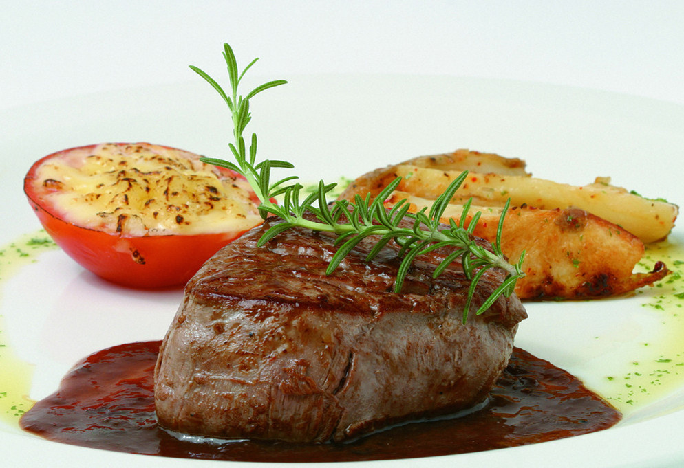
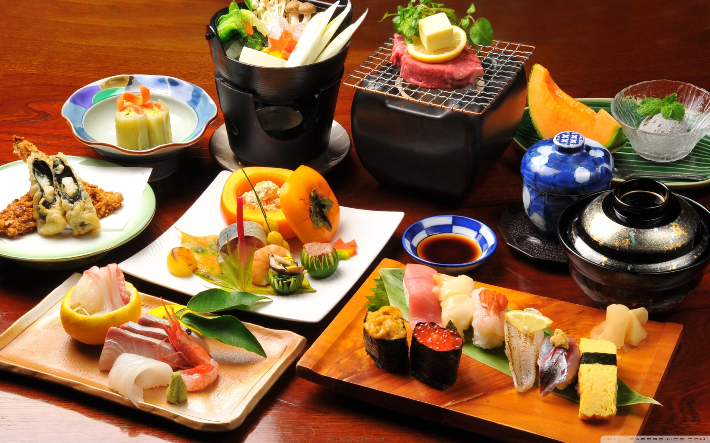
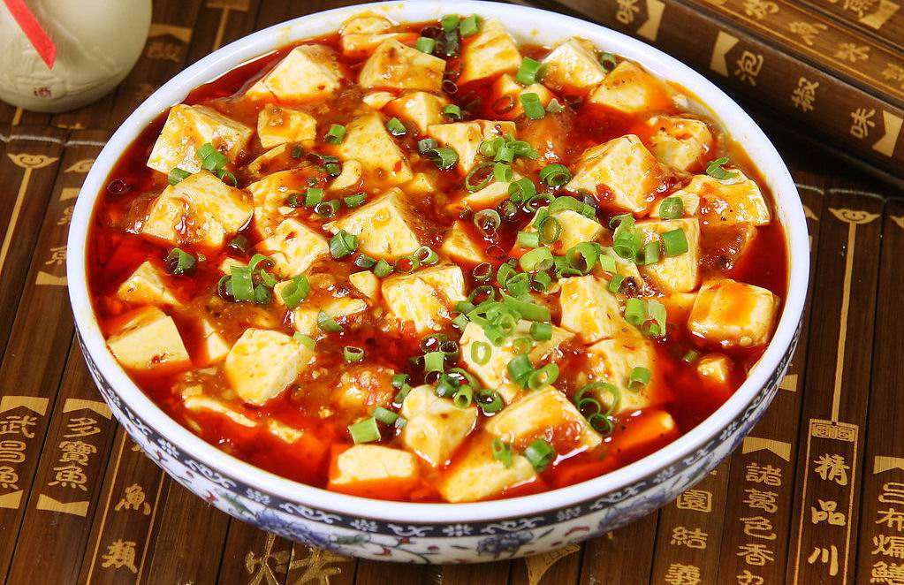

Introduction: A normal western food can the separate into three parts: starter, main courses, and dessert.
Typical Food: Steak, Ribs, Shrimp, Lobster, Chicken, Cakes, Pie, Cocktail, Salard...
Restaurant:
The Keg Telephone: (604) 685-4388
Top of Vancouver Telephone: (604) 669-2220
- Food
Western-Style Food
Japanese Food
Introduction: The traditional cuisine of Japan (washoku) is based on rice with miso soup and other dishes, with an emphasis on seasonal ingredients.
Typical Food: Sushi, Grilled fish, Sashimi, Udon, Tempura...
Restaurant:
Sushi Garden Telephone: (604) 436-0104
Miku Restaurant Telephone: (604) 568-3900
Chinese Food
Introduction: Chinese traditional cuisines rely on basic methods of preservation such as drying, salting, pickling and fermentation, and they always use a lot of seasoning such as garlic, shallots, chilli.
Typical Food: Too much to list out...
Restaurant:
Fortune House Telephone: (604) 438-8686
Old Xian's Food Telephone: (604) 370-3888